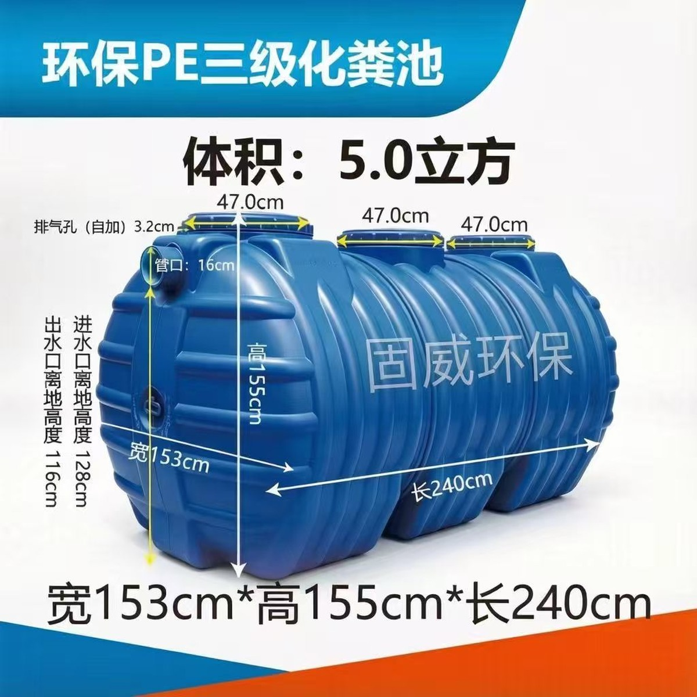
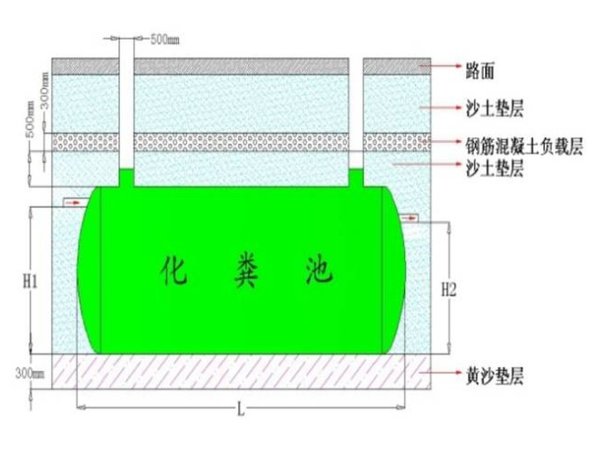
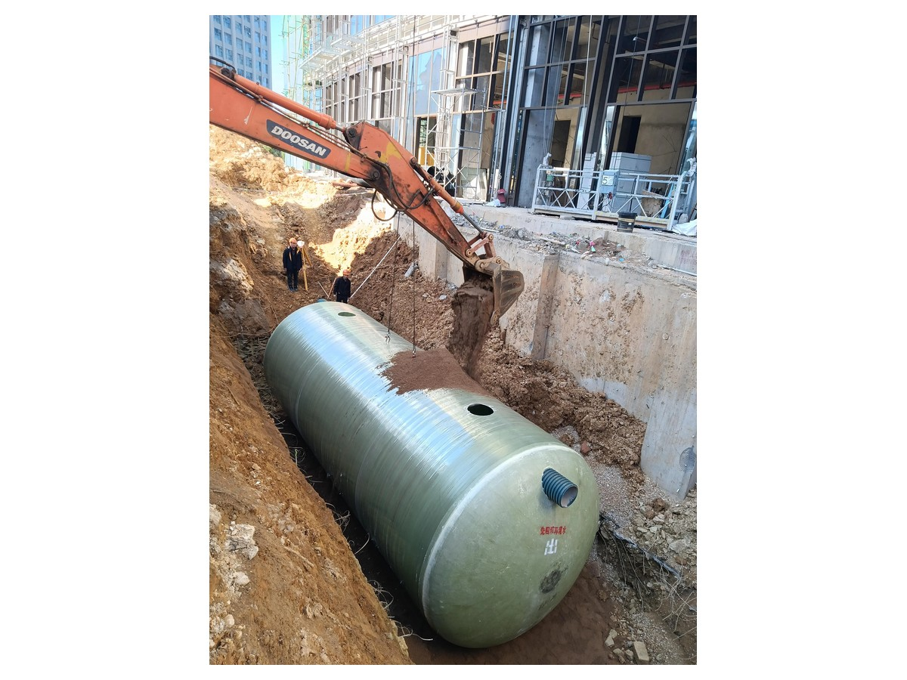
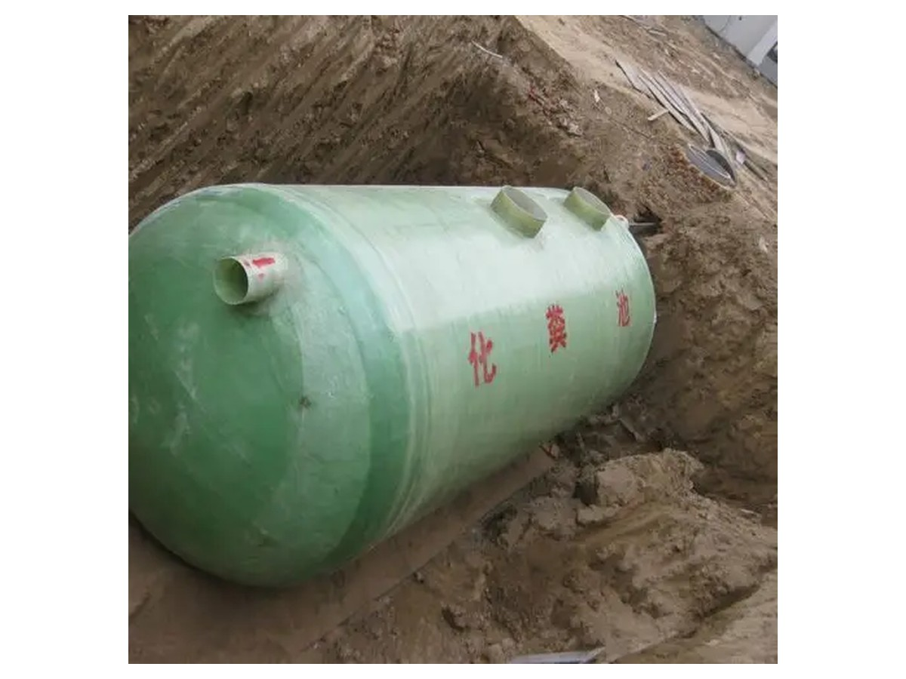

GUWEIENVIRONMENTAL
GUWEIENVIRONMENTALApplications
Applications include rural wastewater and sanitation projects, guesthouses, scenic areas, temporary worker accommodation, small factories and parks.
Prefabricated septic tanks and installation configurations selected for user numbers, effective volume and site conditions.
Guwei PE septic tanks are rotationally moulded from high-density polyethylene in one piece. Unlike assembled tanks, the body has no welded seams, providing strong resistance to leakage for rural sanitation and decentralized wastewater projects.

Applications include rural wastewater and sanitation projects, guesthouses, scenic areas, temporary worker accommodation, small factories and parks.
Direct manufacturing with tender support, qualification documents, drawings and site technical coordination. We welcome engineering companies and local service providers.
Equipment appearance and configuration. Select an image to enlarge.




Sedimentation and anaerobic treatment provide pretreatment. The subsequent discharge route must be incorporated into the overall water and drainage design.
Equipment Selection · Pump Room Layout · Drawing Coordination
Technical Code for Rainwater Management and Utilization of Buildings and Sub-districts (GB 50400—2016).Government Publication Reference
Technical Requirements for Glass Fiber Reinforced Plastic Septic Tanks (CJ/T 409—2012), applicable to FRP products.National Public Service Platform for Standards Information
Each project must also review current mandatory requirements, local rules and project-specific design conditions.
Share the project type, capacity and contact details so we can discuss your technical requirements.
Online enquiries are not currently available. Please contact us by phone. +86 18026396076